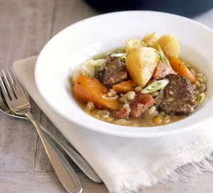
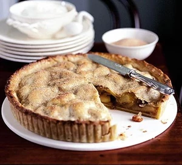

Irish stew
The trick with this classic one-pot is to use a cheaper cut of meat, which means you’ll skimp on price but not quality
Ingredients:
- 1 tbsp sunflower oil
- 200g smoked streaky bacon, preferably in one piece, skinned and cut into chunks
- 900g stewing lamb, cut into large chunks
- 5 medium onions, sliced
- 5 carrots, sliced into chunks
- 3 bay leaves
- small bunch thyme
- 100g pearl barley
- 850ml lamb stock
- 6 medium potatoes, cut into chunks
- small knob of butter
- 3 spring onions, finely sliced
Directions:
- Heat oven to 160C/fan 140C/gas 3. Heat the oil in a flameproof casserole. Sizzle the bacon for 4 mins until crisp. Turn up the heat, then cook the lamb for 6 mins until brown. Remove the meats with a slotted spoon. Add the onions, carrots and herbs to the pan, then cook for about 5 mins until softened. Return the meat to the pan, stir in the pearl barley, pour over the stock, then bring to a simmer.
- Sit the chunks of potato on top of the stew, cover, then braise in the oven, undisturbed, for about 1½ hrs until the potatoes are soft and the meat is tender. The stew can now be chilled and kept in the fridge for 2 days, then reheated in a low oven or on top of the stove. Remove from the oven, dot the potatoes with butter, scatter with the spring onions and serve scooped straight from the dish.
Irish apple tart
Ingredients:
- 200g golden raisins or sultana
- 100ml/3½fl oz Irish single-malt whiskey , plus an extra splash for apples
- 250g demerara sugar
- 1 ½kg cooking apple , peeled and cored
- small knob of butter
- 1 cinnamon stick , very slightly crushed
- 284ml pot whipping cream
- 1 egg beaten, with a splash of milk
Directions:
- To make the savoury sugar, heat oven to 140C/fan 160C/gas 1. Scatter the muscovado sugar, Maldon sea salt and lemon zest over a baking sheet, then leave in the oven for 15 mins to dry out. Leave to cool, then blitz in a blender. Pass through a large-holed sieve to remove any big lumps, then set aside.
- For the pastry, pulse the flour and butter together in a food processor until you have the texture of breadcrumbs. Add the sugar and eggs and pulse until everything comes together. Wrap the pastry with cling film and chill.
- Tip the raisins into a pan with the whisky, and add 1 tsp of the sugar. Bring to a simmer, then leave to one side.
- Cut the apples into large wedges and melt the butter in a heavy-based pan. Toss the apples in the butter, then add half the demerara sugar, the cinnamon stick and a healthy splash of whiskey. Cook the apples for 3-4 mins until coloured, then place in a sieve to drain away excess juices.
- Turn oven up to 160C/fan 140C/gas 3. Grease and flour a 28cm baking ring. Roll two-thirds of the pastry to the thickness of a £1 coin and line the ring. Chill for at least 20 mins. Prick pastry with a fork, then bake blind in the oven for around 10 mins. Brush with beaten egg, then return to the oven for 5 mins. Repeat this process again, cooking for another 5 mins – this will keep the pastry crisp. Leave to cool, then add the apple and raisin mixtures reserving any whiskey that has not been absorbed by the raisins. Roll a lid for the tart with the remaining pastry and place on top of the tart, egg washing to secure edges. Prick the top to release steam, egg wash the top of the pastry and sprinkle with the remaining demerara sugar. Turn oven to 180C/fan 160C/gas 4 and cook for 20 mins, until the top is golden.
- Put the apple tart on a large board. Lightly whip the cream and add the raisin whiskey to taste. Serve the spiced sugar in a bowl on the side to sprinkle over.